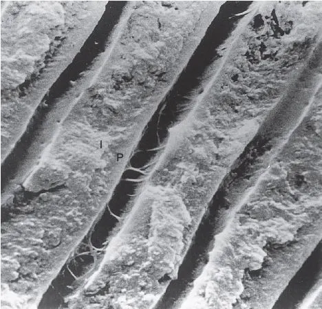
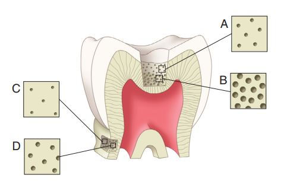

نسخه استخراجشده؛ ترجمه یا تأیید علمی انجام نشده است. وضعیت: captured
قدم 1 · theory
معماری توبولهای عاجی و اجزای بافتی
معماری توبولهای عاجی و اجزای بافتی
عاج یک بافت زنده و مرطوب است که حدود ۷۰٪ ماده معدنی، ۲۰٪ ماده آلی (عمدتاً کلاژن تایپ I) و ۱۰٪ آب دارد.
🔑 تفکیک دو بخش اصلی عاج:
عاج پریتوبولار (Peritubular Dentin): دیواره داخلی توبول را میسازد. فوقالعاده معدنی (کلسیم بالا) و تقریباً فاقد کلاژن است.
عاج اینترتوبولار (Intertubular Dentin): بین توبولها قرار دارد. درصد مینرال کمتری دارد اما غنی از شبکه کلاژن تایپ I است (بستر اصلی لایههیبرید در باندینگ).

قدم 2 · theory
تغییرات مورفولوژیک توبولها
تغییرات مورفولوژیک توبولها (از DEJ تا پالپ)
تعداد و قطر توبولهای عاجی در طول بافت یکسان نیست:
در نزدیکی DEJ (عمق سطحی): تعداد توبولها کمتر (حدود $20,000$ در میلیمتر مربع) و قطر آنها باریکتر (حدود $0.8$ میکرومتر) است.
در نزدیکی پالپ (عمق عمیق): تعداد توبولها متراکمتر (حدود $45,000$ در میلیمتر مربع) و قطر آنها بسیار گشادتر (حدود $2.5$ میکرومتر) است.
📌 نتیجه کلینیکی: هرچه حفره عمیقتر و به پالپ نزدیکتر باشد، نفوذپذیری (Permeability) عاج و میزان رطوبت آن بیشتر شده و اتچینگ/باندینگ چالشبرانگیزتر میشود.

قدم 3 · theory
پدیده اسکلروز عاجی
پدیده اسکلروز عاجی (Sclerotic Dentin)
عاج اسکلروتیک (Sclerotic / Transparent Dentin): در پاسخ به تحریکات ملایم و مزمن (پوسیدگی کند یا سایش)، املاح کریستالی آپاتیت درون توبولها رسوب کرده و آنها را مسدود میکنند.
🔑 ویژگیهای اسکلروز:
نفوذپذیری (Permeability) عاج را به شدت کاهش داده و مانع نفوذ سموم به پالپ میشود.
به دلیل انسداد توبولها، سخت، صقلی و تیره دیده میشود.
اسید اتچ به سختی در آن نفوذ میکند، بنابراین نیاز به زمان اتچینگ بیشتری در ادهزیو دارد.
قدم 4 · question
پدیده اسکلروز عاجی (Sclerotic Dentin) حاصل رسوب کدام ماده درون توبولهای عاجی در پاسخ به تحریکات مزمن است؟
۰۱
الیاف کلاژن
۰۲
کریستالهای املاح آپاتیت
۰۳
باکتریهای کشتهشده
۰۴
پروتئینهای بزاق
قدم 5 · question
هنگام انجام ترمیم آدهزیو در یک حفره بسیار عمیق، علت اصلی کاهش استحکام باندینگ نسبت به حفرات سطحی چیست؟
۰۱
افزایش عاج اینترتوبولار
۰۲
خروج مایع توبولی بیشتر و کاهش سطح عاج اینترتوبولار برای ایجاد لایه هیبرید
۰۳
حضور بیشتر عاج پریتوبولار
۰۴
عدم نفوذ اسید به عاج عمیق
قدم 6 · question
تفاوت اصلی سیستمهای آدهزیو Etch & Rinse و Self-Etch در برخورد با لایه سمیر (Smear Layer) چیست؟
۰۱
Etch & Rinse لایه سمیر را کاملاً حل و حذف میکند، در حالی که Self-Etch آن را حل کرده و در لایههیبرید ادغام میکند
۰۲
هر دو لایه سمیر را کاملاً حذف میکنند
۰۳
Self-Etch لایه سمیر را دستنخورده باقی میگذارد
۰۴
Etch & Rinse لایه سمیر را ضخیمتر میکند
قدم 7 · question
درصد وزنی تقریبی ماده معدنی (هیدروکسی آپاتیت) در بافت عاج سالم چقدر است؟